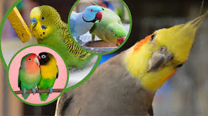

O que São
Os psitacídeos (Psittacidae) são aves inteligentes e muito engraçadas, que possuem o cérebro muito desenvolvido.
Elas possuem a capacidade de imitar com facilidade todos os tipos de som, inclusive palavras.
Como identificar um psitacídeo?
O que são Psitacídeos: O Manual Completo desses Pets - Agrosete
É possível saber o que são psitacídeos por meio das particularidades dessas aves.
Os psitacídeos têm como principais características a cabeça mais robusta e larga para sustentar o bico, que é curvo, forte e especializado em quebrar e descascar sementes e alimentos como amêndoas, castanhas e, até mesmo, coco.
O que psitacídeos comem?
Os psitacídeos, quando em vida livre, alimentam-se do que lhes é ofertado, ou seja, pode-se afirmar que essas aves têm hábitos granívoro,
frugívoro, nectarívoro e insetívoro, pois alimentam-se de grãos, frutas, frutos, sementes, insetos e flores.

.jpeg) https://blog.cobasi.com.br/psitacideos/
https://blog.cobasi.com.br/psitacideos/